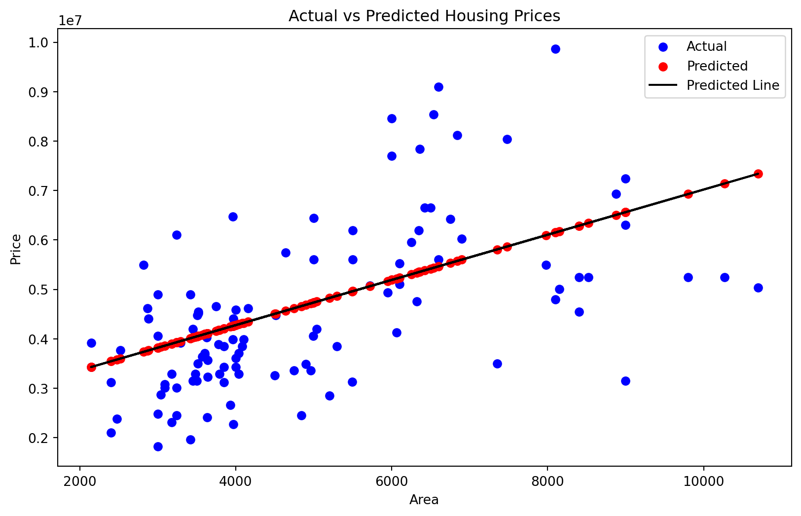

Understanding the relationship between variables is a cornerstone of data analysis. In the realm of machine learning, linear and non-linear regression models are pivotal tools for deciphering these relationships. In this blog post, we’ll explore both linear and non-linear regression, complete with a practical example using a real-world dataset. We will implement these concepts in Python and use data visualization to enhance our understanding.
Linear Regression: Unraveling Linear Relationships
Linear regression is a method to model the linear relationship between a dependent variable and one or more independent variables. It’s widely used for its simplicity and efficiency.
Real-World Example: Housing Prices
Let’s consider a scenario where we predict housing prices based on various features like size, number of rooms, and age of the house. We’ll use a dataset containing these features and corresponding house prices.
Step 1: Import Libraries and Load Data
Code
import pandas as pdimport numpy as npimport matplotlib.pyplot as pltfrom sklearn.linear_model import LinearRegressionfrom sklearn.model_selection import train_test_splitfrom sklearn.model_selection import train_test_splitfrom sklearn.ensemble import RandomForestRegressorfrom sklearn.metrics import mean_squared_error# Load datasethousing_data = pd.read_csv('Housing.csv')
Step 2: Preparing the Data
Code
X = housing_data[['area']]y = housing_data['price']# Initialize the Random Forest Regressorfrom sklearn.preprocessing import LabelEncoder# creating instance of labelencoderlabelencoder = LabelEncoder()housing_data['mainroad'] = labelencoder.fit_transform(housing_data['mainroad'])housing_data['guestroom'] = labelencoder.fit_transform(housing_data['guestroom'])housing_data['hotwaterheating'] = labelencoder.fit_transform(housing_data['hotwaterheating'])housing_data['parking'] = labelencoder.fit_transform(housing_data['parking'])housing_data['airconditioning'] = labelencoder.fit_transform(housing_data['airconditioning'])housing_data['furnishingstatus'] = labelencoder.fit_transform(housing_data['furnishingstatus'])housing_data['basement'] = labelencoder.fit_transform(housing_data['basement'])housing_data['prefarea'] = labelencoder.fit_transform(housing_data['prefarea'])# Splitting the dataX_train, X_test, y_train, y_test = train_test_split(X, y, test_size=0.2)
Step 3: Linear Regression Model
Code
# Initialize and train the modellinear_model = LinearRegression()linear_model.fit(X_train, y_train)# Predicting the pricesy_pred = linear_model.predict(X_test)
Step 4: Visualization
Figure 1 shows the plot of the actual and predicted housing prices
Code
plt.figure(figsize=(10,6))plt.scatter(X_test['area'], y_test, color='blue', label='Actual') # Actual valuesplt.scatter(X_test['area'], y_pred, color='red', label='Predicted')plt.plot(X_test['area'], y_pred, color='black', label='Predicted Line')# plt.scatter(X, y)plt.xlabel('Area')plt.ylabel('Price')plt.title('Actual vs Predicted Housing Prices')plt.legend()plt.show()

Figure 1: Actual and Predicted Prices
Linear and non-linear regression models are powerful tools in machine learning for understanding and predicting relationships between variables. While linear models offer simplicity and are easy to interpret, non-linear models capture more complex patterns and can provide more accurate predictions in certain scenarios. In our examples, linear regression helped us understand housing prices and their variation with the area of the houses
Delving Into Non-Linear Regression: Predicting Housing Prices with Random Forests
When it comes to predicting real estate prices, the complexity and variability of influencing factors make it an ideal candidate for non-linear regression models. One of the most robust and versatile non-linear models is the Random Forest. In this blog post, we’ll explore how to use a Random Forest regressor, a type of ensemble learning method, to predict housing prices. We’ll walk through the process with a sample dataset, complete with Python code and data visualization.
Random Forest: A Non-Linear Powerhouse
Random Forest is an ensemble learning method, primarily used for classification and regression. It works by constructing a multitude of decision trees at training time and outputting the mean prediction of the individual trees for regression tasks. This method is highly effective due to its ability to capture complex non-linear relationships in data.
Predicting Housing Prices with Random Forest
To demonstrate the Random Forest in action, let’s consider a housing dataset that includes various features like house size, number of rooms, age, location, and other relevant factors, along with the house prices.
Step 1: Setting Up the Environment
First, let’s import the necessary Python libraries and load our dataset:
Code
import pandas as pdimport numpy as npimport matplotlib.pyplot as pltfrom sklearn.linear_model import LinearRegressionfrom sklearn.model_selection import train_test_splitfrom sklearn.model_selection import train_test_splitfrom sklearn.ensemble import RandomForestRegressorfrom sklearn.metrics import mean_squared_error
Step 2: Preparing the Data
We’ll select our features and target variable (house price) and split the data into training and testing sets:
Code
X = housing_data.drop('price', axis=1)y = housing_data['price']# Split the dataset into training and test setsX_train, X_test, y_train, y_test = train_test_split(X, y, test_size=0.3, random_state=42)
Step 3: Building and Training the Random Forest Model
Now, we’ll create and train our Random Forest regressor:
Code
rf_regressor = RandomForestRegressor(n_estimators=1000, random_state=42)# Train the modelrf_regressor.fit(X_train, y_train)
In a Jupyter environment, please rerun this cell to show the HTML representation or trust the notebook. On GitHub, the HTML representation is unable to render, please try loading this page with nbviewer.org.
Figure 2: Distribution of actual and predicted prices
For each prediction, calculate the standard deviation of the outputs from all individual trees in the forest. This gives a measure of how much variance there is in the predictions from the different trees. This plot will give you an idea of the spread of predictions for each data point, indicating where the model is more or less certain about its predictions.
Conclusion
The Random Forest regressor is a powerful tool for tackling complex non-linear regression tasks like housing price prediction. Its ability to handle a large number of features and capture complex, non-linear relationships makes it an excellent choice for real-world prediction scenarios. In our example, we’ve seen how the Random Forest model can be used to predict housing prices based on various features. The scatter plot visualization further aids in understanding the accuracy of our model, showcasing the effectiveness of Random Forests in handling such complex data. Remember, while Random Forest is a robust model, it’s essential to tune its parameters like the number of trees (n_estimators) for optimal performance. Additionally, feature selection and preprocessing can significantly impact the model’s effectiveness.
Source Code
---title: "Navigating Linear and Non-Linear Relationships with Machine Learning"image: image.jpegauthor: "Sahana Bhaskar"date: "2023-11-28"categories: [regression, supervised learning]format: html: code-fold: true code-tools: truejupyter: python3---Understanding the relationship between variables is a cornerstone of data analysis. In the realm of machine learning, linear and non-linear regression models are pivotal tools for deciphering these relationships. In this blog post, we'll explore both linear and non-linear regression, complete with a practical example using a real-world dataset. We will implement these concepts in Python and use data visualization to enhance our understanding.# Linear Regression: Unraveling Linear RelationshipsLinear regression is a method to model the linear relationship between a dependent variable and one or more independent variables. It's widely used for its simplicity and efficiency.## Real-World Example: Housing PricesLet's consider a scenario where we predict housing prices based on various features like size, number of rooms, and age of the house. We'll use a dataset containing these features and corresponding house prices.### Step 1: Import Libraries and Load Data```{python}import pandas as pdimport numpy as npimport matplotlib.pyplot as pltfrom sklearn.linear_model import LinearRegressionfrom sklearn.model_selection import train_test_splitfrom sklearn.model_selection import train_test_splitfrom sklearn.ensemble import RandomForestRegressorfrom sklearn.metrics import mean_squared_error# Load datasethousing_data = pd.read_csv('Housing.csv')```### Step 2: Preparing the Data```{python}X = housing_data[['area']]y = housing_data['price']# Initialize the Random Forest Regressorfrom sklearn.preprocessing import LabelEncoder# creating instance of labelencoderlabelencoder = LabelEncoder()housing_data['mainroad'] = labelencoder.fit_transform(housing_data['mainroad'])housing_data['guestroom'] = labelencoder.fit_transform(housing_data['guestroom'])housing_data['hotwaterheating'] = labelencoder.fit_transform(housing_data['hotwaterheating'])housing_data['parking'] = labelencoder.fit_transform(housing_data['parking'])housing_data['airconditioning'] = labelencoder.fit_transform(housing_data['airconditioning'])housing_data['furnishingstatus'] = labelencoder.fit_transform(housing_data['furnishingstatus'])housing_data['basement'] = labelencoder.fit_transform(housing_data['basement'])housing_data['prefarea'] = labelencoder.fit_transform(housing_data['prefarea'])# Splitting the dataX_train, X_test, y_train, y_test = train_test_split(X, y, test_size=0.2)```### Step 3: Linear Regression Model```{python}# Initialize and train the modellinear_model = LinearRegression()linear_model.fit(X_train, y_train)# Predicting the pricesy_pred = linear_model.predict(X_test)```### Step 4: Visualization@fig-linear shows the plot of the actual and predicted housing prices```{python}#| label: fig-linear#| fig-cap: "Actual and Predicted Prices"plt.figure(figsize=(10,6))plt.scatter(X_test['area'], y_test, color='blue', label='Actual') # Actual valuesplt.scatter(X_test['area'], y_pred, color='red', label='Predicted')plt.plot(X_test['area'], y_pred, color='black', label='Predicted Line')# plt.scatter(X, y)plt.xlabel('Area')plt.ylabel('Price')plt.title('Actual vs Predicted Housing Prices')plt.legend()plt.show()```Linear and non-linear regression models are powerful tools in machine learning for understanding and predicting relationships between variables. While linear models offer simplicity and are easy to interpret, non-linear models capture more complex patterns and can provide more accurate predictions in certain scenarios.In our examples, linear regression helped us understand housing prices and their variation with the area of the houses# Delving Into Non-Linear Regression: Predicting Housing Prices with Random ForestsWhen it comes to predicting real estate prices, the complexity and variability of influencing factors make it an ideal candidate for non-linear regression models. One of the most robust and versatile non-linear models is the Random Forest. In this blog post, we'll explore how to use a Random Forest regressor, a type of ensemble learning method, to predict housing prices. We'll walk through the process with a sample dataset, complete with Python code and data visualization.## Random Forest: A Non-Linear PowerhouseRandom Forest is an ensemble learning method, primarily used for classification and regression. It works by constructing a multitude of decision trees at training time and outputting the mean prediction of the individual trees for regression tasks. This method is highly effective due to its ability to capture complex non-linear relationships in data.## Predicting Housing Prices with Random ForestTo demonstrate the Random Forest in action, let's consider a housing dataset that includes various features like house size, number of rooms, age, location, and other relevant factors, along with the house prices.### Step 1: Setting Up the EnvironmentFirst, let’s import the necessary Python libraries and load our dataset:```{python}import pandas as pdimport numpy as npimport matplotlib.pyplot as pltfrom sklearn.linear_model import LinearRegressionfrom sklearn.model_selection import train_test_splitfrom sklearn.model_selection import train_test_splitfrom sklearn.ensemble import RandomForestRegressorfrom sklearn.metrics import mean_squared_error```### Step 2: Preparing the DataWe'll select our features and target variable (house price) and split the data into training and testing sets:```{python}X = housing_data.drop('price', axis=1)y = housing_data['price']# Split the dataset into training and test setsX_train, X_test, y_train, y_test = train_test_split(X, y, test_size=0.3, random_state=42)```### Step 3: Building and Training the Random Forest ModelNow, we'll create and train our Random Forest regressor:```{python}rf_regressor = RandomForestRegressor(n_estimators=1000, random_state=42)# Train the modelrf_regressor.fit(X_train, y_train)```### Step 4: Making Predictions and Evaluating the ModelWe use our trained model to predict house prices and evaluate its performance:```{python}# Making predictionsy_pred = rf_regressor.predict(X_test)# Evaluating the modelmse = mean_squared_error(y_test, y_pred)print(f'Mean Squared Error: {mse}')from sklearn.metrics import r2_scorer2 = r2_score(y_test, y_pred)print(f'Co-efficient of regression: {r2}')```### Step 5: Visualizing the ResultsA scatter plot (@fig-non-linear) can help visualize how well our predicted values compare against the actual values:```{python}#| label: fig-non-linear#| fig-cap: "Distribution of actual and predicted prices"plt.figure(figsize=(10,6))plt.scatter(y_test, y_pred)plt.xlabel('Actual Prices')plt.ylabel('Predicted Prices')plt.title('Actual vs Predicted Housing Prices')plt.plot([y_test.min(), y_test.max()], [y_test.min(), y_test.max()], 'k--', lw=3)plt.show()```For each prediction, calculate the standard deviation of the outputs from all individual trees in the forest. This gives a measure of how much variance there is in the predictions from the different trees.This plot will give you an idea of the spread of predictions for each data point, indicating where the model is more or less certain about its predictions.# ConclusionThe Random Forest regressor is a powerful tool for tackling complex non-linear regression tasks like housing price prediction. Its ability to handle a large number of features and capture complex, non-linear relationships makes it an excellent choice for real-world prediction scenarios.In our example, we've seen how the Random Forest model can be used to predict housing prices based on various features. The scatter plot visualization further aids in understanding the accuracy of our model, showcasing the effectiveness of Random Forests in handling such complex data.Remember, while Random Forest is a robust model, it's essential to tune its parameters like the number of trees (n_estimators) for optimal performance. Additionally, feature selection and preprocessing can significantly impact the model's effectiveness.